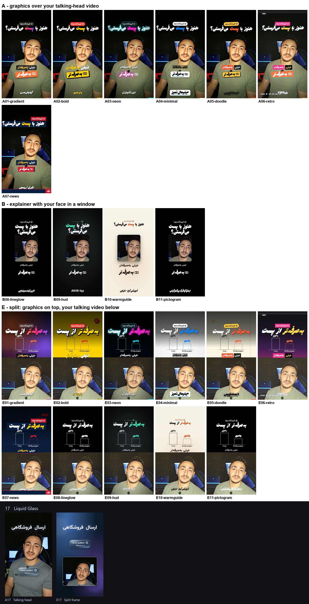

از عکس سبک تا ویدیوی نهایی
سبک را در گالری ببین، چیدمان چهره را مشخص کن، متن و زمانهای ویدیوی خودت را بده و با موتور پلن یا Three.js + GSAP پیشنمایش و خروجی بساز.

۱. سبک و قاب را انتخاب کن
حرفِ نام عکس، شکل استفاده از چهره است؛ شماره، ظاهر را نشان میدهد. A یعنی گرافیک روی چهره، B چهره در پنجره، C موشن کامل، E قاب تقسیمشده و D نمونهٔ Three.js + GSAP.
روی چهره
ویدیوی اصلی میماند؛ المانها با گفتار ظاهر میشوند.
چهره در چیدمان
برای توضیح فرایند، چهره در پنجره یا نیمهٔ پایین قرار میگیرد.
موشن کامل
در کاتاوی، تصویر گوینده حذف میشود و گفتار روی گرافیک ادامه دارد.
Three.js + GSAP
صحنههای کدنویسیشدهٔ دو یا سهبعدی در قالب React.
عکسهای گالری فقط مرجع بصریاند. کد A/B/C/E در assets/styles.json و assets/engine.html است؛ کد D در templates/remotion/src/. ۲۶ پریست پلن وجود دارد و همهٔ آنها هنوز عکس گالری ندارند.


۲. خواستهات را دقیق بنویس
مسیر ویدیو، سبک یا عکس گالری، جای چهره، نوع المان، محدودهٔ زمانی و خروجی مطلوب را بنویس. چند خواسته را میتوان در یک پیام ترکیب کرد.
«E:\camtasia\optimised video\opt.mp4» را به سبک نیاس ادیت بزن. A روی چهره باشد و بخش پشتیبانی از ثانیهٔ ۲۷ تا پایان جمله C موشن کامل شود. هنگام نام بردن سرویسها لوگوهای واقعی را پشت سر نمایش بده. در بخش نظرها از اسکرینشاتهای review استفاده کن؛ زیرنویس کمی پایینتر باشد. موسیقی بیزنسی با گین -20 dB و ترنزیشن ووش، زوماوت ساده و فلش کوتاه بگذار. MP4 کامل و پیشنمایش بخش اصلاحشده را بده.
کتابخانهٔ فرمانها نمونههای انتخاب سبک، گالری، صدا، زیرنویس، شواهد، اصلاح و تحویل را دارد. این جملهها دستور PowerShell نیستند؛ دستیار آنها را به پلن یا کد Three.js + GSAP تبدیل میکند.
۳. مسیر موتور پلن
- با
analyze.pyگفتار، زمان و تصویر ویدیو را استخراج کن. - برای هر جمله در
beats.mdمفهوم، تصویر، حرکت و زمان را بنویس. - از نمونه نیاس یا نمونه اکسپلینر یک
plan.jsonمناسب همان ویدیو بساز. - با
checkوpreviewخطا و چیدمان را اصلاح کن؛ سپسfullوcompose.pyرا اجرا کن.
python scripts/setup.py --skip-model python scripts/analyze.py "SOURCE.mp4" "WORKDIR" --lang fa node scripts/render.js "WORKDIR/plan.json" check --strict node scripts/render.js "WORKDIR/plan.json" preview 1 5 10 node scripts/render.js "WORKDIR/plan.json" full python scripts/compose.py "WORKDIR/plan.json" --out "OUTPUT.mp4"
این فرمانها را در PowerShell از ریشهٔ مخزن اجرا کن و SOURCE، WORKDIR و OUTPUT را با مسیرهای خودت عوض کن. توضیح کامل
۴. مسیر Three.js + GSAP
در Three.js + GSAP عکسهای D12 تا D16 به پنج Composition مربوطاند: Pop3DVideo، Premium3DVideo، MinimalVideo، InfographicVideo و MainVideo. قالب، داستان نمونه است؛ زمان، متن و صحنهها را با ورودی تازه بازنویسی کن.
python scripts/remotion_init.py "WORKDIR" --audio "SOURCE.mp4" --install Set-Location "WORKDIR/remotion" npm run dev npm run lint npx remotion compositions npx remotion still Premium3DVideo "frame.jpg" --frame=120 --gl=angle npx remotion render Premium3DVideo "final.mp4" --gl=angle
در Studio پیشنمایش را بررسی کن. شناسه و مدت در src/Root.tsx، زمانبندی سهبعدی در src/pop3d/timing.ts و صحنهها در پوشههای src/ هستند. برای ۲بعدی تنظیم GL معمولاً لازم نیست. آموزش کامل Three.js + GSAP · مستند رسمی Studio
۵. پیش از تحویل
MP4 نهایی را برای سینک المانها، خوانایی زیرنویس، درستبودن نامها و نشانیها، شاهدهای واقعی و بلندی گفتار بازبینی کن. فایل اصلی را بازنویسی نکن. چکلیست انتشار